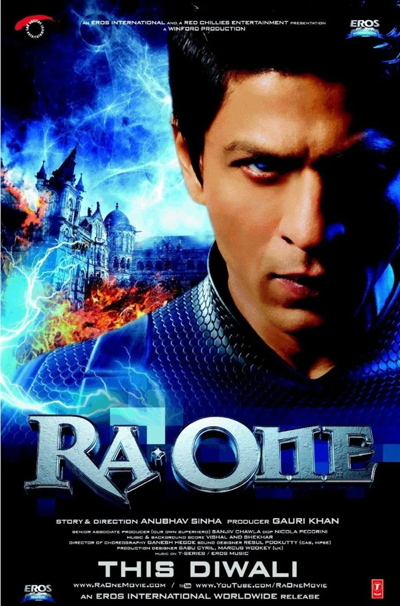
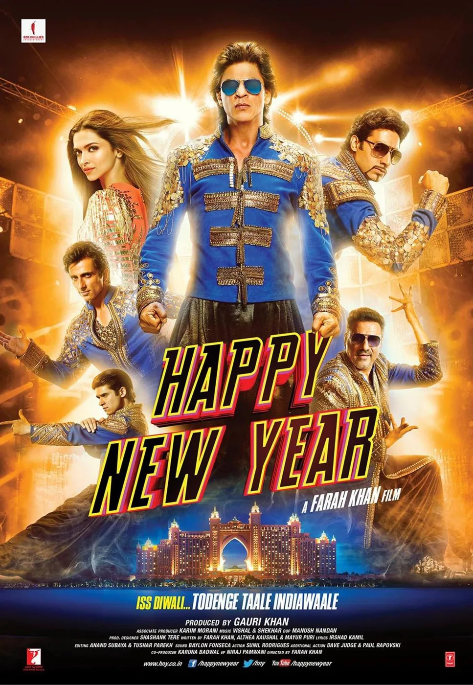

The Final Thesis · section 4 of 92
From RA.ONE to ZERO: A comparative study of Shah Rukh Khan's digital marketing innovation, 2011–2018
The central question
Your proposed benchmark is clear: RA.ONE's digital marketing, G.ONE merchandising, and Chennai Express's digital campaign represent a period when technology, storytelling, fan participation, and Shah Rukh Khan's own creative interests came together.
The professional question is not simply whether his later films had digital marketing. They unquestionably did. It is whether they continued the same level of technology-led experimentation, participatory storytelling, original digital product development, and personally driven innovation.
I would structure the case study around that distinction. A film can have enormous digital reach, millions of views, hashtags, trailers, celebrity appearances, and paid media without creating a new digital experience for its audience.
The analysis below separates documented campaign activity from my assessment of its innovation, and separates both from the hypothesis about Khan's personal involvement. A campaign's public footprint can be examined; an individual's private motivation or degree of disengagement cannot be established from marketing outputs alone.
- Executive summary
Research period: 2011–2018 · From RA.ONE's launch to ZERO's release
My professional assessment is that your thesis has a substantial, testable foundation in the documented campaigns.
The three benchmarks demonstrate three distinct kinds of innovation:

RA.ONE / G.ONE — 2011
Digital IP & franchise innovation
Moving beyond film publicity into character merchandising, games, technology partnerships, and a potential continuing entertainment franchise.

Chennai Express — 2013
Participatory digital marketing
Fans did not merely receive publicity: their tweets moved a virtual train, their actions unlocked the trailer, and games, apps, analytics, and fan clubs worked as an integrated system.

The post-Chennai Express period — 2014–2018
A changing innovation pattern
A number of later campaigns still used digital tools creatively. But the publicly documented emphasis increasingly shifts toward content releases, character-led social media, platform effects, promotional tours, and engagement programmes, rather than the integrated digital-product architecture of the earlier benchmarks.
The distinction matters. I would not describe the later films as having no innovation. ZERO, in particular, introduced several substantial digital activations. The more precise finding is that the kind of innovation changed, and the publicly documented evidence of a sustained, integrated technology-and-merchandising vision became less consistent.
Your Chennai Express case study is unusually valuable here because it is not a retrospective fan opinion. It is a contemporaneous account co-authored by you and Persistent Systems' Siddhesh Bhobe, with you identified as Chief Digital Strategist for Chennai Express and Shah Rukh Khan. It explicitly describes Khan's visionary ideas, your strategy, fan-club participation, and the technology and analytics infrastructure.
ce_digitalcasestudy.pdf